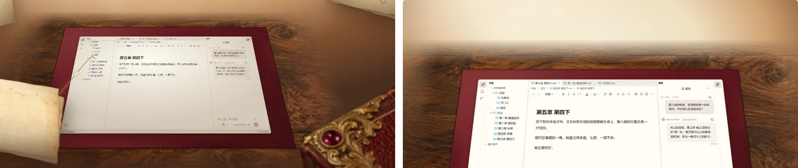
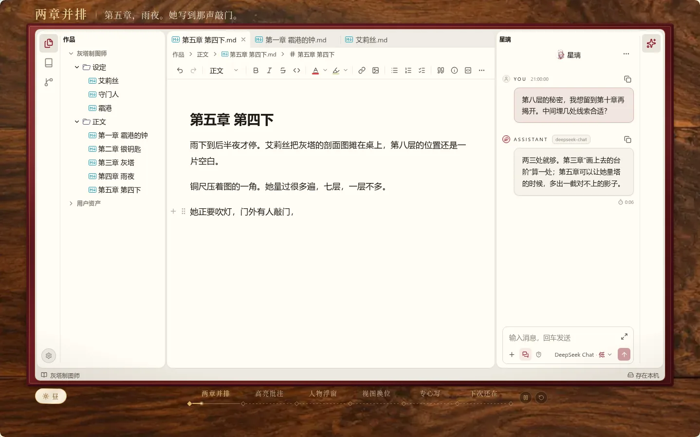

产品介绍首页：入殿·俯案成界（第 11 轮）
照第 10 轮的回答改：查明并修好首屏滚动变卡；白天换上生成的深胡桃木案面，工作台下垫一块深石榴红的丝绸。星盘与线索丝按上一轮定下，没再动。第二幕（编辑器）起的脚本与原型放到下一轮。
首屏的滚动，在你的机器上顺了吗？
为什么卡
- 第 9、10 轮加的提灯、线索丝和星盘，每一帧都要改几个值：每张纸受多少光、星盘离指针多近、远处的桌子压多暗。这几个值写在了外层，而浏览器的规矩是外层一改，里面每个元素都要重新算一遍样式。工作台整台都在桌子里面，每帧要重算几百个元素，一帧算三四遍。
- 另外提灯、线索丝、星盘三处各自先改样式、再量位置，每量一次都逼浏览器当场再算一遍。
怎么改的
- 这些值直接写在用它的那张纸、那架星盘上，并告诉浏览器它们不往里传；一帧里先把位置量完再改；没变的值不写；星盘外圈的 72 根刻度合成一条线。看起来一点没变。
- 量的结果（同一台机器、同样高的负载，无头浏览器，绝对值偏慢，前后比例可信）：往下滚一屏再滚回来，每帧要重算的元素从几百个降到十几个，花在重算样式上的时间从 4.4 到 4.9 秒降到 0.4 到 0.5 秒；指针在首屏上画圈，从 10 到 16 秒降到 3 到 4 秒。这一轮新加的丝绸垫量过，没有多出来。
- 无头浏览器量不到显卡把画面画出来的那一段，真机上顺不顺要你滚一下。还卡的话，备注写是哪一段（首屏停着、往下滚、落地以后）、夜还是昼。
白天的桌面与丝绸，这样还突兀吗？
左：第 10 轮。右：这一轮。

左：首屏里工作台那一块放大。右：往下滚到一半。

落地以后：丝绸只露一道窄边，眉题与章节条压在胡桃木上。
为什么突兀（请 @designer 看了第 10 轮的白天）
- 工作台下面那一团是椭圆的暗：外圈的酒红丝绒加上桌下的大影子，在亮墙上拱过工作台的上沿，像烧焦的一块；桌子背后那圈暖光又把工作台的边照虚。
这一轮改了什么
- 桌面换成新生成的深胡桃木（生成 1 张，没有重发）。四边柔化成一块矩形案面：透视下是往远处淡掉的梯形，远边是一道横的柔边，不再拱起来。
- 工作台下垫一块深石榴红的丝绸：首屏时左右各宽出工作台的一成、上下各一成多；往下滚时跟着往里收，落地后只露一道窄边，眉题与章节条压在胡桃木上。包边暗红，往里压一道细暗金线；首屏时跟着工作台压暗一点，免得抢了标题和按钮。
- 影子：工作台在丝绸上是贴身的两层短影，丝绸在木面上一层薄影，落地后都收轻。桌子背后那圈暖光白天不画。夜里没动。
- 丝绸现在只用样式画：远看是一块红色的桌垫，更像毡或皮，看不出是缎子。要像丝绸得有一张生成的缎面照片（正上方拍、铺满、深石榴红的素缎、四周几道浅皱、左上来的暖光），包边与金线仍用样式叠上去，缩放时不变形。选“生成”我就去做，花一次图片额度，提示词照前几轮登记。
已定
- 首页给搜索进来的人，做得像产品介绍；书庭这类页面另做、自由发挥（2026-11-26）
- 截图尽量少：直接把工作台复原，让人体验到拖动、分屏与布局动画的丝滑（第 1 轮）
- 第一屏把介绍说明白，同时要有高级精美的动画，让人想往下滚；往下滚进入滚动动画（第 1 轮）
- 基调取 w00050 t06 契约仪式页的史诗、神圣、西幻气氛，不复制；现有的 NovelAI 场景图不直接用（2026-11-26）
- 要讲的功能：写作与编辑器、世界引擎、剧情（在做）、星璃与 Agent、本地与开源、插件与 SDK、桌面版、模型自选；llmlint 不列（2026-11-26）
- 先做方向一《入殿·俯案成界》；材质可以用生成的贴图，首页可以用星璃的立绘与贴纸（2026-11-26）
- 首屏方向不变、先打磨材质；按钮加金边一类的装饰，往皇室奢华感走；工作台缺省夜间配色、可以切换（第 4 轮）
- 第一幕放慢讲清楚，加回浮窗、视图换位置、关掉再打开，和首屏一样华丽（第 4 轮与会话）
- 首句用 e3“每一个世界，都从一行字开始。”，配 From words to world.（第 4 轮与会话）
- 演示的拖动用实时布局；访客动过要有恢复动画；顺手介绍编辑器的标注与高亮；整个页面要有白天；首屏静中有动、纸条可以轮播；按钮出几版（第 5 轮之后的会话）
- 第一幕不用访客滚动：落地以后自动连播，访客愿意就停着看；拖动不要上下左右中的落点分区；首屏的动静要快一些、大一些、更高级（第 6 轮之后的会话）
- 第一幕这样连播可以；章节条用古籍标尺；首屏“从字到世界”与指针响应都要，旁边的东西要能点、点了稍放大，要有跟鼠标位置、速度互动的动画；按钮用皮面烫金；白天要再改；虚拟指针压到菜单之上、拖动快些走弧线、字幕换显眼的地方、重点加遮罩（第 7 轮）
- 字幕放在工作台正上方；重点用遮罩，但高亮要做得好看；首屏能点能动手的几处可以，指针效果要更明显、更好看，考虑多加点元素；白天的桌面换成生成的旧橡木（第 8 轮）
- 高亮用鎏金标记；首屏的提灯与金丝可以；星盘与线索丝都留，但要有看得见的动画与交互；白天要更华丽，不能只有一张桌、其余灰蒙蒙（第 9 轮）
- 星盘与线索丝这样可以；白天的桌面换生成的深胡桃木，工作台的投影与四周要处理（可以垫一块红丝绸）；首屏滚动变卡要查（第 10 轮）